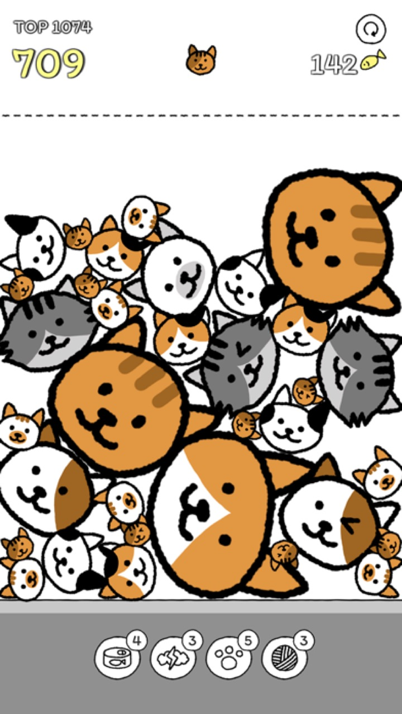

★4.8
Nota na App Store


Solte gatos iguais para fundi-los em maiores — e aquele pop! estoura o seu estresse junto


★4.8 · 10.000+ avaliações no mundo · Grátis
+=


Quando dois gatos iguais se encontram, nasce o próximo. Estes são os 11 reais do jogo.
E quando dois dos maiores gatos finalmente se encontram…? Vá conferir você mesmo 🎆

Uma regra só: gatos iguais se fundem em um gato maior. Mas aquelas orelhinhas fazem cada queda rolar de um jeito imprevisível — e é por isso que você sempre diz "só mais uma". O pop! e a vibração quando estouram? Serotonina pura.
Do Clássico tranquilo ao Speed frenético, o contra-relógio de 5 minutos e a Corrida até 1000. Cada modo tem seu próprio ranking global — persiga o recorde de hoje.

Coloque óculos, chapéus e lacinhos nos seus gatos, e troque o tema do tabuleiro como quiser. Anúncios só quando você escolher — e funciona offline, em qualquer lugar.
Publicadas de verdade na App Store

"Muito bom! Ótimo entretenimento, não precisa de internet e é bom para viagens longas!"

"Cats Are Cute já era um dos melhores jogos da app store, mas com esse novo jogo conseguiram desenvolver meu novo vício! ❤️"

"Baixei esse jogo por recomendação da Kim Minjeong!! ❄️ obrigada Winter por me divertir indicando este jogo, vou bater o seu recorde. 🤍"
Do estúdio por trás de Cats are Cute (★4.9 · 71.000+ avaliações)


Grátis no iOS e Android